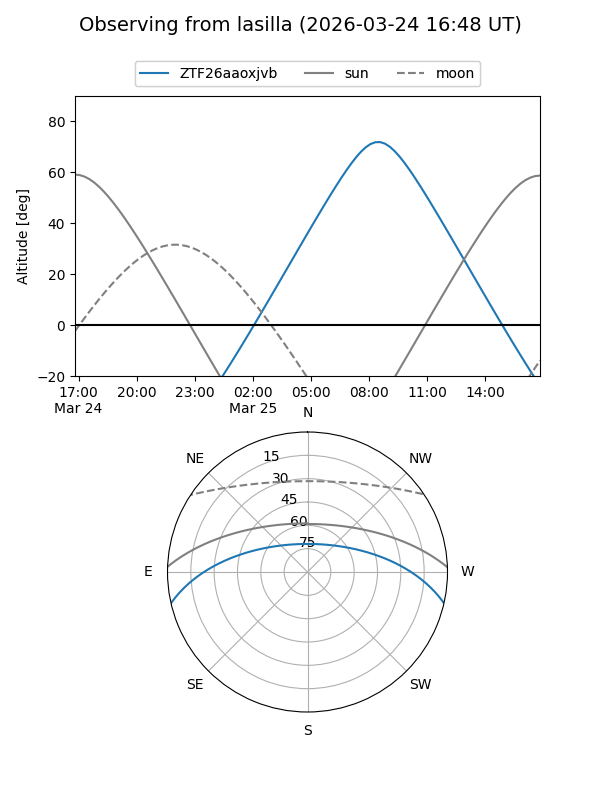
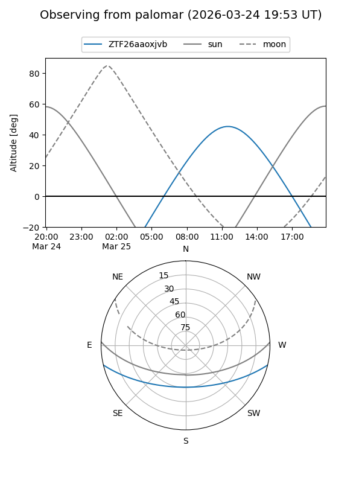

ZTF26aaoxjvb
Target ZTF26aaoxjvb at 2026-03-25 12:19
Aliases and brokers:
FINK: link
Lasair: link
ALeRCE: link
alt names
ZTF26aaoxjvb (ztf,fink_ztf)
Coordinates:
equatorial (ra, dec) = 238.6343,-11.13009
equatorial (HMS+DMS) = 15:54:32.24,-11:07:48.32
galactic (l, b) = (358.3980,+31.40279)
Flags:
Photometry:
last ztfg=17.85, ztfr=17.12
1 ztfg, 1 ztfr detections
Lightcurve
Visibility


Additional plots